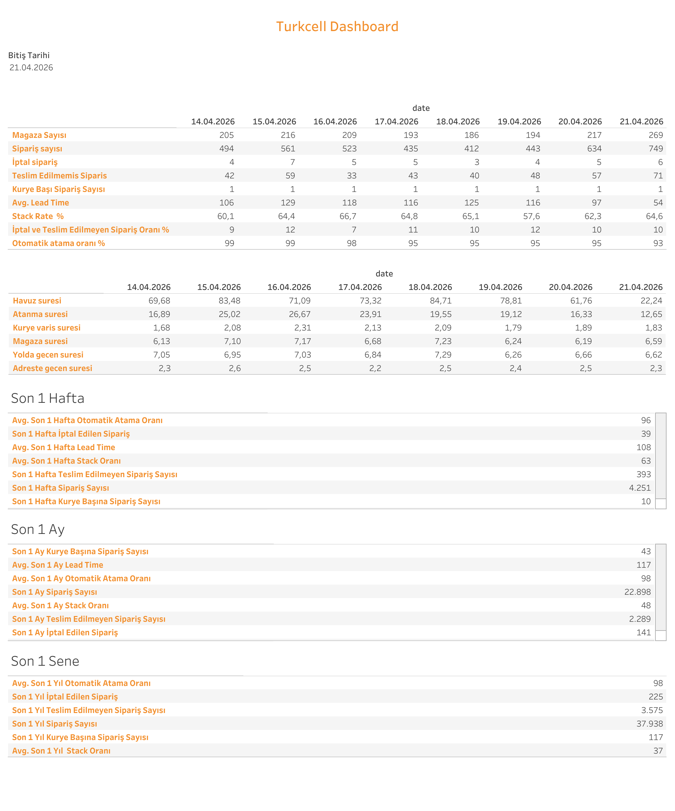

Canlı Rapora Erişin
Güncel Turkcell operasyon verilerini Tableau üzerinde interaktif olarak görüntüleyin.
Dashboard Hakkında
Ne Gösterir?
Turkcell Dashboard, Turkcell mağazalarına yapılan teslimat operasyonunu günlük, haftalık, aylık ve yıllık bazda izler. Mağaza sayısı, sipariş hacmi, iptal oranları ve sürece ait KPI'lar detaylı tablolarla sunulur.
- Günlük Operasyon Tablosu: Mağaza sayısı, sipariş sayısı, iptal sipariş, teslim edilemeyen sipariş, kurye başı sipariş, Avg. Lead Time, Stack Rate ve atama oranı
- Süre Metrikleri: Günlük havuz süresi, atanma süresi, kurye varış süresi, mağaza süresi, yolda geçen süre ve adreste geçen süre
- Son 1 Hafta Özeti: Haftalık kümülatif KPI'lar
- Son 1 Ay Özeti: Aylık kümülatif KPI'lar
- Son 1 Sene Özeti: Yıllık kümülatif KPI'lar
- Filtreler: Bitiş tarihi seçimi
Dashboard Önizleme

Turkcell Dashboard — Tableau